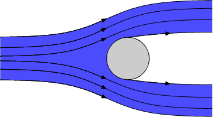
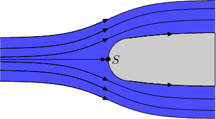

Fluid Dynamics
Table of Contents
- 1. Quickstart, Ideal Fluids
- 1.1. Basic Quantities
- 1.2. Euler's equations
- 1.3. Hydrostatics
- 1.4. On the "Absence of Convection" Condition
- 1.5. Bernoulli's Equation
- 1.6. Energy Flux
- 1.7. Momentum Flux
- 1.8. Conservation of Circulation
- 1.9. Potential Flow
- 1.10. Incompressible Fluids
- 1.10.1. Equations of Motion
- 1.10.2. Bernoulli's Equation
- 1.10.3. Energy Flux
- 1.10.4. Back to the Equations of motion
- 1.10.5. Irrotational ("Potential") Flow
- 1.10.6. Stagnation Point
- 1.10.7. Planar Flow for Incompressible Fluids of Constant Density
- 1.10.8. Mass Flux Across a curve
- 1.10.9. Methods of Solving Two-Dimensional Irrotational Flow
- 1.10.10. …and when is the Fluid Incompressible?
- 1.11. Drag force in potential flow past a body
- 1.12. Gravity waves
- 1.13. Internal waves in an incompressible fluid
- 1.14. Waves in a rotating fluid
- 2. References
These are my reading notes of Landau and Lifshitz's Fluid Mechanics (vol.6 of their series on Theoretical Physics).
A note on L&L's style. It seems that Landau and Lifshitz write in a manner that's the mirror opposite of abstract mathematics. Instead of "theorem" and then "proof", they provide a "proof" followed by a "theorem" (but do not announce it with a bold Theorem prefix). Consequently, reading L&L amounts to trying to figure out what claims are made in a section, then reconstructing the proof.
1 Quickstart, Ideal Fluids
1.1 Basic Quantities
Basically, the idea is to model "infinitesimal parcels" of a fluid, so we think in terms of densities(?). Like, if we took out an "infinitesimal microscope" in particle physics, a particle is a point. But in fluid mechanics, it's a "Kool Aide man": a "container" of infinitesimal volume of fluid. There are 5 quantities which determine the state of a fluid:
- \(\vec{v}\) the 3 components of the velocity vector for a fluid parcel
- \(p\) fluid pressure
- \(\rho\) mass density
We think of the velocity vector as a vector field parametrized by time.
Landau and Lifshitz note the pressure and density, plus the equations of state, determine the thermodynamics properties of the fluid (L&L, vol.6, §1).
1.1.1 Material Derivative
A recurring operator we'll use is the Material Derivative defined as
\begin{equation} \frac{D}{D t} = \vec{v}\cdot\vec{\nabla} + \frac{\partial}{\partial t}. \end{equation}We can think of it as translating a time derivative in the frame of a given fluid packet to the lab frame.
Prove that the material derivative is linear
\[\frac{D}{Dt}(f + g) = \frac{Df}{Dt} + \frac{Dg}{Dt}\]
Prove that the material derivative obeys the Leibniz rule
\[\frac{D}{Dt}(fg) = f\frac{Dg}{Dt}+\frac{Df}{Dt}g\]
Prove that the material derivative obeys the chain rule
\[\frac{D}{Dt}(f\circ g) = (f'\circ g)\frac{Dg}{Dt}\]
What is \(f'\circ g\) in this case?
1.1.2 Continuity Equation
The conservation of mass induces the Continuity Equation:
\begin{equation} \partial_{t}\rho + \vec{\nabla}\cdot(\rho\vec{v}) = 0. \end{equation}1.2 Euler's equations
From Newton's second law, we have \(\rho \,\D\vec{v}/\D t = -\vec\nabla p\). The derivative of the velocity vector, in this case, becomes the material derivative since \(\vec{v}=\vec{v}(\vec{x}(t), t)\) so the total derivative is just \(\partial_{t}\vec{v} + (\vec{v}\cdot\vec\nabla)\vec{v}\). We also add the force of gravity \(\rho \vec{g}\) to get Euler's equations, if we divide through by \(\rho\)
\begin{equation} \partial_{t}\vec{v} + (\vec{v}\cdot\vec\nabla)\vec{v} = \frac{-1}{\rho}\vec\nabla p + \vec{g}. \end{equation}We often we will write Euler's equations as
\begin{equation} \partial_{t}\vec{v} + (\vec{v}\cdot\vec\nabla)\vec{v} = -\vec{\nabla}w. \end{equation}1.2.1 Adiabatic Fluids
Note we didn't consider viscosity in deriving this equation, we just used Newton's second law modified for fluid packets (to give us the material derivative of velocity as the "acceleration"). Since we didn't consider viscosity, there is no heat exchange between different parts of the fluid, nor between the fluid and its environment.
This absence of heat exchange between components of the fluid (and between the fluid and its environment) implies the motion is adiabatic throughout the fluid. As a consequence, the motion of an ideal fluid must necessarily be supposed adabiatic.
L&L note in adiabatic motion, the entropy of any particle of fluid remains constant as that particle moves around in space. So if \(s\) denotes the entropy per unit mass, we can express the adabiatic condition as
\begin{equation} \frac{\D s}{\D t} = \partial_{t}s + (\vec{v}\cdot\vec\nabla)s = 0. \end{equation}L&L refer to the quantity \(\rho s\vec{v}\) as the Entropy Flux Density because we have the "equation of continuity" for entropy in terms of it:
\begin{equation} \partial_{t}(\rho s) + \vec{\nabla}\cdot(\rho s\vec{v}) = 0. \end{equation}Edwige Godlewski and Pierre-Arnaud Raviart's Numerical Approximation of Hyperbolic Systems of Conservation Laws (first ed) note (either §2 or §3 of the introductory chapter) that we use entropy conditions to pick out the physically relevant "weak solutions" to the differential equations describing the fluid's motion.
1.2.2 Isentropic Fluids
If, "as usually happens", the entropy is constant throughout the volume of the fluid at some initial instant, it retains everywhere the same constant value at all times and for any subsequent motion of the fluid. In this case we can write the adiabatic condition as
\begin{equation} s = \mbox{constant} \end{equation}and L&L usually does so. In this case, such a motion is said to be Isentropic.
When will entropy not be constant throughout the fluid at some moment in time?
The Euler equations of motion for an isentropic fluid may be rewritten as
\begin{equation} \partial_{t}(\curl\vec{v}) = \curl(\vec{v}\times(\curl\vec{v})). \end{equation}which involves only the velocity.
This derivation of Euler's equations, and isentropic stuff, comes from L&L, vol.6, §2.
Isentropic flow occurs when the change in flow variables is small and gradual. The ideal fluid is an example of this. (C.f., NASA)
1.2.3 Boundary Conditions for Euler's Equation
This requires some boundary condition. For an ideal fluid, this boundary condition is simply "the fluid cannot penetrate a surface solid". I.e., the component of the fluid velocity normal to the bounding surface must vanish if that surface is at rest:
\begin{equation} v_{\vec{n}} = 0. \end{equation}In general, for the case when the surface is moving, \(v_{n}\) must be equal to the corrsponding component of the velocity of the surface.
The next steps are to study this equation when the fluid is at rest \(\vec{v}=0\) (hydrostatics) and when \(\partial_{t}\vec{v}=0\) is constant (Bernoulli's law).
See also later discussions of boundary conditions (§10).
1.3 Hydrostatics
Consider a fluid at rest in a uniform gravitational field. Then Euler's equation takes the form
\begin{equation} \vec{\nabla}p = \rho \vec{g}. \end{equation}This equation describes the mechanical equilibrium of the fluid.
We say a fluid is in Mechanical Equilibrium if it exhibits no macroscopic motion. (L&L, vol.6, §4 — note: L&L never actually define this term throughout their 10-volume series)
If there are no external forces, then this equation becomes \(\vec{\nabla}p=0\) or equivalently \(p = \mbox{constant}\). The pressure is the same everywhere in the fluid.
1.3.1 Case: Constant Density
When we have \(\rho\) be constant throughout the fluid, we can solve the simplified Euler's equation. Taking \(z\) as the vertical axis, so \(\vec{g} = -g\widehat{z}\), then we have
\begin{equation} \partial_{x}p = \partial_{y}p = 0 \end{equation}and
\begin{equation} \partial_{z} = -\rho g. \end{equation}Hence the general solution for this system of equations is
\begin{equation} p = -\rho g z + \mbox{constant}. \end{equation}If further the fluid is at rest has a free surface at height \(h\), to which an external pressure \(p_{0}\) (the same at every point) is applied, this surface must be the horizontal plane \(z = h\). From the condition \(p = p_{0}\) for \(z = h\), we find the constant is \(p_{0} + \rho gh\), so in this case
\begin{equation} p = p_{0} + \rho g(h - z). \end{equation}But again, this is the special case of a special case: when density is constant.
1.3.2 Nonconstant Densities in Thermal Equilibrium
When our fluid is a gas, or we have large amounts of our liquid, then we cannot approximate density as constant. This is especially true for gases like the atmosphere.
But we may suppose the fluid is in mechanical and thermal equilibrium. So the temperature is the same at every point. We use the thermal relation
\begin{equation} \D\Phi = -s\,\D T + V\,\D p \end{equation}where \(\Phi\) is the thermodynamic potential (Gibbs free energy) per unit mass. For constant temperature, this becomes
\begin{equation} \D\Phi = V\,\D p = \frac{\D p}{\rho}. \end{equation}This let's us write
\begin{equation} \frac{\vec{\nabla}p}{\rho} = \vec{\nabla}\Phi. \end{equation}Euler's equation then becomes
\begin{equation} \vec{\nabla}\Phi = \vec{g}. \end{equation}For a constant vector \(\vec{g}\) directed along the negative \(z\)-axis, we have
\begin{equation} \vec{g}:=-\vec{\nabla}(gz) \end{equation}hence
\begin{equation} \vec{\nabla}(\Phi + gz) = 0, \end{equation}or equivalently
\begin{equation} \Phi + gz = \mbox{constant}. \end{equation}Does this make sense? Well, \(\Phi + gz = \mbox{constant}\) is known to be the condition for thermodynamic equilirium of a system in an external field. Good, recovering well-known results tell us we're on the right track…or, we've been on the wrong track for such a long time that we can't tell. At any rate, we're consistent, and that's good.
1.3.3 Consequence of Hydrostatic Condition: Mechanical Equilibrium Criteria
Particularly useful for me, when considering a fluid like the atmosphere, which is in mechanical equilibrium in a gravitational field, the pressure in it can be a function only of the altitude/"height" \(z\) (otherwise, if the pressure were different at different points with the same altitude, motion would follow).
It follows then that the density
\begin{equation} \rho = \frac{-1}{g}\frac{\D p}{\D z} \end{equation}is also a function of \(z\) only. The pressure and density determine the temperature, which is therefore again a function of \(z\) only. So in mechanical equilibrium in a gravitational field, the pressure, density, and temperature distributions depend only on the altitude.
Conversely, if, say, the temperature is different at different points with the same altitude, then mechanical equilibrium is impossible. (Thus this fact is useful in contrapositive form, too.)
1.3.4 For a large mass of self-gravitating Fluid
When we have a large mass of fluid, say a star, whose separate parts are held together by gravitational attraction. Let \(\phi\) be the Newtonian gravitational potential of the field due to the fluid. It satisfies the differential equation
\begin{equation} \nabla^{2}\phi = 4\pi G\rho \end{equation}where \(G\) is the Newtonian gravitational constant. The gravitational acceleration is \(-\vec{\nabla}\phi\), and the force on a mass \(\rho\) is \(-\rho\vec{\nabla}\phi\). The condition of equilibrium is therefore
\begin{equation} \vec{\nabla}p = -\rho\vec{\nabla}\phi. \end{equation}Dividing both sides by \(\rho\) then taking the divergence of both sides gives us
\begin{equation} \nabla\cdot\left(\frac{1}{\rho}\vec{\nabla}p\right) = -4\pi G\rho. \end{equation}This seems like a great deal more difficult. But we did not assume thermodynamic equilibrium, and in exchange we have a condition for mechanical equilibrium.
If we further assume the body is not rotating, then it will enjoy a spherical symmetry when in equilibrium, and the density & pressure distributions will be spherically symmetric. We have in spherical coordinates our condition become
\begin{equation} \frac{1}{r^{2}}\frac{\D}{\D r}\left(\frac{r^{2}}{\rho}\frac{\D p}{\D r}\right) = -4\pi G\rho. \end{equation}Again, this fails to hold for a rotating body (like the Earth).
1.4 On the "Absence of Convection" Condition
We've concluded from our discussion of hydrostatics that a fluid can be in mechanical equilibrium (i.e., exhibit no macroscopic motion) without being in thermodynamic equilibrium. The hydrostatic equation can be satisfied even if the temperature is not constant throughout the fluid.
The question arises concerning the stability of such an equilibrium. Unsurprisingly, the equilibrium is stable if a condition is fulfilled. Otherwise, the equilibrium is unstable, and this leads to the appearance in the fluid of currents which tend to mix the fluid in such a way as to equalize the temperature. This motion is called Convection.
The condition for "mechanical equilibrium being stable" is "absence of convection".
1.5 Bernoulli's Equation
1.5.1 Steady Flows
By Steady Flow, we mean one in which the velocity is constant in time at any point occupied in the fluid. I.e., \(\vec{v}\) is a function of the coordinates only, so that \(\partial_{t}\vec{v}=0\).
In a steady flow, the isentropic Euler equations becomes
\begin{equation} \frac{1}{2}\vec{\nabla}(v^{2}) - \vec{v}\times(\curl\vec{v}) = -\vec{\nabla}w. \end{equation}1.5.2 Streamlines
Streamlines are lines such that the tangent to a streamline at any point gives the direction of the velocity of that point. They are determined by the system of differential equations
\begin{equation} \frac{\D x}{v_{x}} = \frac{\D y}{v_{y}} = \frac{\D z}{v_{z}}. \end{equation}This can be phrased differently, as the integral curve of the velocity vector fields, i.e., as
\begin{equation} \frac{\D}{\D s}\varphi(s) = \vec{v}(\vec{x}(s), t) \end{equation}with initial condition \(\varphi'(0) = \vec{v}(\vec{x}(0), t)\). The \(\varphi\colon[0,1]\to\RR^{3}\) is a streamline.
In steady flow, the streamlines do not vary with time (i.e., the choice of \(t\) does not vary the solution of \(\varphi\)), and coincide with the paths of the fluid particles.
BUT for non-steady flows, this coincidence no longer occurs: the tangents to the streamlines give the directions of the velocities of fluid particles at various points in space at a given instant, where the tangents to the paths give the directions of the velocities of given fluid particles at various times.
Question: for non-steady flows, are streamlines still a valuable concept?
1.5.3 Bernoulli's Equation Derivation
Taking the equation for steady flows, then forming the scalar product with the unit vector tangent to the streamline at each point (call this unit vector \(\vec{\ell}\)). The projection of the gradient on any direction is the derivative in that direction (duh, the directional derivative). So
\begin{equation} \vec{\ell}\cdot(\vec{\nabla}w) = \partial w/\partial\ell. \end{equation}The vector \(\vec{v}\times(\curl\vec{v})\) is orthogonal to \(\vec{v}\), hence its dot product with \(\vec{\ell}\) vanishes.
Thus we get the simplified equation
\begin{equation} \frac{\partial}{\partial\ell}\left(\frac{v^{2}}{2} + w\right) = 0. \end{equation}It follows that \(w + v^{2}/2\) is constant along the streamline, i.e.,
\begin{equation} \frac{1}{2}v^{2} + w = \mbox{constant}. \end{equation}This is precisely Bernoulli's Equation.
In general, the constant \(w + v^{2}/2\) takes different values for different streamlines.
1.5.4 In a Gravitational Field
So, if our fluid flows in a gravitational field, the acceleration \(\vec{g}\) due to gravity must be added to the right-hand side of the isentropic Euler equations for steady flows:
\begin{equation} \frac{1}{2}\vec{\nabla}(v^{2}) - \vec{v}\times(\curl\vec{v}) = -\vec{\nabla}w + \vec{g}. \end{equation}Let us take the direction of gravity as the \(z\)-axis, with \(z\) increasing upwards. This choice let's us relate the cosine of the angle between \(\vec{g}\) and \(\vec{\ell}\) to be equal to the derivative \(-\D z/\D\ell\), so the projection of \(\vec{g}\) on \(\vec{\ell}\) is \(-g\,\D z/\D\ell\).
Then we have our projected equation become
\begin{equation} \frac{\partial}{\partial\ell}\left(\frac{v^{2}}{2} + w + gz\right) = 0. \end{equation}Hence Bernoulli's equation states that along a streamline we have
\begin{equation} \left(\frac{v^{2}}{2} + w\right) = \mbox{constant}. \end{equation}1.6 Energy Flux
1.6.1 Energy per unit volume
For our fluid, the energy per unit volume of fluid is \(\rho v^{2}/2 + \rho\varepsilon\) the sum of its kinetic energy and internal energy, where \(\varepsilon\) is internel energy per unit mass.
The change in this energy is given by its partial derivative with respect to time.
1.6.2 Conservation Equation
Assuming an adiabatic fluid, the conservation of energy implies
\begin{equation} \partial_{t}(\rho v^{2}/2 + \rho\varepsilon) = -\nabla\cdot[\rho\vec{v}(v^{2}/2 + w)]. \end{equation}This follows by computing \(\partial_{t}(\rho v^{2}/2 + \rho\varepsilon)\), the change in energy with respect to time. The first and second terms are rather involved, and delegated to "lemmas" below. But the lemmas then give us
\begin{equation} \partial_{t}\left(\frac{\rho v^{2}}{2} + \rho\varepsilon\right) = -\left(\frac{v^{2}}{2} + w\right)\vec{\nabla}\cdot(\rho\vec{v}) -\rho\vec{v}\cdot\vec{\nabla}(w + v^{2}/2) \end{equation}The right-hand side can be rewritten to give the final result.
1.6.2.1 Change of Kinetic Energy with respect to Time
To compute this quantity, we begin by considering the kinetic energy term
\begin{equation} \partial_{t}(\rho v^{2}/2) = \frac{v^{2}}{2}\frac{\partial\rho}{\partial t} + \rho\vec{v}\cdot\frac{\partial\vec{v}}{\partial t} \end{equation}Now we use the continuity equation and equation of motion
\begin{equation} \partial_{t}(\rho v^{2}/2) = \frac{-v^{2}}{2}\nabla\cdot(\rho\vec{v}) - \vec{v}\cdot(\vec{\nabla}p) - \rho\vec{v}\cdot\bigl((\vec{v}\cdot\vec{\nabla})\vec{v}\bigr). \end{equation}In the last term, we replace
\begin{equation} \vec{v}\cdot\bigl((\vec{v}\cdot\vec{\nabla})\vec{v}\bigr) = \frac{1}{2}\vec{v}\cdot(\vec{\nabla}(v^{2})) \end{equation}and in the middle term (using the thermodynamic relation \(\D w = T\,\D s + (1/\rho)\D p\)) we replace
\begin{equation} \vec{\nabla}p = \rho\vec{\nabla}w - \rho T\vec{\nabla}s \end{equation}thus obtaining
\begin{equation} \partial_{t}(\rho v^{2}/2) = \frac{-v^{2}}{2}\nabla\cdot(\rho\vec{v}) - \rho\vec{v}\cdot\vec{\nabla}(w + v^{2}/2) + \rho T\vec{v}\cdot(\vec{\nabla}s). \end{equation}1.6.2.2 Change of Internal Energy with respect to Time
Now we compute \(\partial_{t}(\rho\varepsilon)\), we use the thermodynamic relation
\begin{equation} \D\varepsilon = T\,\D s - p\,\D V = T\,\D s + \frac{p}{\rho^{2}}\D\rho. \end{equation}Since \(\varepsilon + p/\rho = \varepsilon + pV\) is the heat function \(w\) per unit mass, we find
\begin{equation} \D(\rho\varepsilon) = \varepsilon\,\D \rho + \rho\,\D \varepsilon = w\,\D \rho + \rho T\,\D s. \end{equation}Thus (using the general adiabatic equation of motion)
\begin{equation} \partial_{t}(\rho\varepsilon) = w\partial_{t}\rho + \rho T\partial_{t}s = -w\vec{\nabla}\cdot(\rho\vec{v}) - \rho T\vec{v}\cdot(\vec{\nabla}s). \end{equation}1.6.3 Meaning of the Conservation Equation
We have an abstract equation we assert is correct through a long string of equations. Believe me? Well, let's see what it means. We need to integrate it over some volume \(V\):
\begin{equation} \partial_{t}\int\left(\frac{\rho v^{2}}{2} + \rho\varepsilon\right)\,\D V = -\int\vec{\nabla}\cdot\left[\rho\vec{v}\left(\frac{v^{2}}{2}+w\right)\right]\,\D V \end{equation}We convert the integral on the right to a surface integral
\begin{equation} \partial_{t}\int\left(\frac{\rho v^{2}}{2} + \rho\varepsilon\right)\D V = -\oint\left[\rho\vec{v}\left(\frac{v^{2}}{2}+w\right)\right]\cdot \D\vec{f}. \end{equation}- The LHS is the rate of change of the energy of the fluid in some volume.
- The RHS is the amount of energy flowing out of this volume in unit time.
- We may call \(\rho\vec{v}(w + v^{2}/2)\) the Energy Flux Density. Its magnitude is the amount of energy passing in unit time through unit area perpendicular to the direction of the velocity. Nifty.
The expression \(\rho\vec{v}(w + v^{2}/2)\) shows any unit mass of fluid carries with it during its motion an amount of energy \(w+v^{2}/2\). The fact that the heat function \(w\) appears here, and not the internal energy \(\varepsilon\), has physical significance. Putting \(w=\varepsilon + p/\rho\), we can write the flux of energy through a closed surface in the form
\begin{equation} -\oint\rho\vec{v}\left(\frac{v^{2}}{2}+\varepsilon\right)\cdot\D\vec{f} -\oint p\vec{v}\cdot\D\vec{f} \end{equation}The first term is the energy (kinetic and internal) transported through the surface in unit time by the mass of fluid. The second term is the work done by pressure forces on the fluid within the surface.
1.7 Momentum Flux
(Note: the "correct" indices would be \(\Pi^{ik}\). And this is the stress-energy tensor's spatial components, for a perfect fluid.)
1.7.1 Derivation of Momentum Flux Density Tensor
The momentum of unit volume is \(\rho\vec{v}\). What is its rate of change with respect to time \(\partial_{t}(\rho\vec{v})\)? We will switch to index notation for ease of computation.
We can use the product rule to find
\begin{equation} \frac{\partial}{\partial t}(\rho v_{i}) = \rho\frac{\partial v_{i}}{\partial t} + \frac{\partial\rho}{\partial t}v_{i} \end{equation}We can use the continuity equation in the form of
\begin{equation} \partial_{t}\rho = -\sum_{k}\frac{\partial(\rho v_{k})}{\partial x_{k}} \end{equation}and Euler's equations in the form of
\begin{equation} \partial_{t}v_{i} = -\frac{1}{\rho}\frac{\partial p}{\partial x_{i}} - \sum_{k}v_{k}\frac{\partial v_{i}}{\partial x_{k}} \end{equation}to obtain
\begin{equation} \partial_{t}(\rho v_{i}) = \rho\left(-\frac{1}{\rho}\frac{\partial p}{\partial x_{i}} - \sum_{k}v_{k}\frac{\partial v_{i}}{\partial x_{k}}\right) + \left(-\sum_{k}\frac{\partial(\rho v_{k})}{\partial x_{k}}\right) v_{i} \end{equation}which simplifies to
\begin{equation} \partial_{t}(\rho v_{i}) = -\frac{\partial p}{\partial x_{i}} - \sum_{k}\frac{\partial}{\partial x_{k}}(\rho v_{i}v_{k}). \end{equation}The first term on the right hand side can be rewritten using index gymnastics as
\begin{equation} \frac{\partial p}{\partial x_{i}} = \sum_{k}\delta_{ik}\frac{\partial p}{\partial x_{k}}. \end{equation}Then we have
\begin{equation} \partial_{t}(\rho v_{i}) = -\sum_{k}\frac{\partial\Pi_{ik}}{\partial x_{k}} \end{equation}where the tensor \(\Pi_{ik}\) is defined as
\begin{equation} \Pi_{ik} = p\delta_{ik} + \rho v_{i}v_{k}. \end{equation}Since \(\Pi_{ik}\) is the sum of two symmetric tensors, it is thus a symmetric tensor.
1.7.1.1 Momentum Flux Density Tensor
We define the tensor \(\Pi_{ik}\) as the Momentum Flux Density Tensor:
\begin{equation} \Pi_{ik} = p\delta_{ik} + \rho v_{i}v_{k}. \end{equation}1.7.2 Its interpretation
We grasp the meaning of the momentum flux density tensor by looking at its integral over some volume
\begin{equation} \partial_{t}\int \rho v_{i}\,\D V = -\int\sum_{k}\frac{\partial\Pi_{ik}}{\partial x_{k}}\,\D V. \end{equation}We can apply Green's theorem to the right hand side, obtaining
\begin{equation} \partial_{t}\int \rho v_{i}\,\D V = -\sum_{k}\oint\Pi_{ik}\,\D f_{k}. \end{equation}- The left-hand side is the rate of change of the \(i\)-th component of momentum contained in the volume (i.e., the domain of integration).
- The RHS is thus the amount of momentum flowing out through the bounding surface in unit time.
So \(\Pi_{ik}\,\D f^{k}\) is the \(i\)-th component of momentum flowing through the surface element \(\D f\). If we write \(\D f_{k}\) in the form of \(n_{k}\,\D f\), where \(\D f\) is the area of the surface element and \(\vec{n}\) is a unit vector along the outward normal, we find that \(\Pi_{ik}n^{k}\) is the flux of the \(i\)-th component of momentum through unit surface area. Note that
\begin{equation} \Pi_{ik}n^{k} = p n_{i} + \rho v_{i}v_{k}n^{k}. \end{equation}or in vector form
\begin{equation} \Pi\vec{n} = p\vec{n} + \rho\vec{v}(\vec{v}\cdot\vec{n}). \end{equation}1.8 Conservation of Circulation
The integral
\begin{equation} \Gamma = \oint \vec{v}\cdot \D\vec{\ell} \end{equation}along some closed contour is called the Velocity Circulation around that contour.
In an ideal fluid, the velocity circulation round a closed "fluid" contour is constant in time.
We compute the time-derivative of the velocity circulation
\begin{equation} \frac{D}{D t}\oint \vec{v}\cdot\D r = \oint\frac{D\vec{v}}{D t}\cdot\D r + \oint\vec{V}\cdot\frac{D}{D t}\D r \end{equation}We use the identity
\begin{equation} \vec{v}\cdot\frac{D}{D t}\D\vec{r} = \vec{v}\cdot\D\frac{D r}{D t}=\D(v^{2}/2) \end{equation}And the fact that the contour integral of a total differential along a closed curve vanishes (i.e., is zero). This leaves us
\begin{equation} \frac{D}{D t}\oint\vec{v}\cdot\D{\vec{r}} = \oint\frac{D\vec{v}}{D t}\cdot\D\vec{r}. \end{equation}Using Euler's equations
\begin{equation} \frac{D}{D t}\vec{v} = -\vec{\nabla}w, \end{equation}we obtain
\begin{equation} \frac{D}{D t}\oint\vec{v}\cdot\D{\vec{r}} = \oint(-\vec{\nabla}w)\cdot\D\vec{r}. \end{equation}Now we use Stoke's theorem
\begin{equation} \oint(-\vec{\nabla}w)\cdot\D\vec{r} = \iint\curl(\vec{\nabla}w)\cdot\D\vec{A}. \end{equation}But the right-hand side vanishes, so
\begin{equation} \frac{D}{D t}\oint\vec{v}\cdot\D{\vec{r}} = 0. \end{equation}Thus we have Kelvin's theorem.
We have from Kelvin's theorem,
\begin{equation} \oint \vec{v}\cdot\D\vec{l} = \mbox{constant}. \end{equation}We refer to the quantity \(\curl\vec{v}\) (the curl of the velocity vector field) as the Vorticity of the field.
Our intuition should think of the corollary to Kelvin's theorem as saying "The vorticity moves with the fluid".
Show: in flows which are not isentropic, any moving particle carries with it a constant value of the product \(\rho^{-1}\vec{\nabla}s\cdot\curl\vec{v}\). (H. Ertel, 1942)
1.9 Potential Flow
Case 1: Steady Flow. Consider a steady flowing fluid. Consider a point on a streamline where the vorticity vanishes \(\curl\vec{v}=0\). We draw an infinitesimal circle around that point, and move the circle with the point over time. The claim is the vorticity in the circle remains constant (by Kelvin's theorem) and moreover every point on the streamline has the same vorticity.
Case 2: Non-steady Flow. Now consider a fluid which is not steady. The same argument holds, except we work with the infinitesimal contour moving around the trajectory of a fluid parcel. (This is because streamlines do not coincide with trajectories in non-steady flowing fluids.)
Observe we are assuming we can always draw a closed contour around every point of a streamline. Is this a valid assumption to make?
A flow for which \(\curl\vec{v}=0\) for every point in the flow is called a Potential Flow or Irrotational Flow; otherwise, it is called a Rotational Flow.
1.9.1 Tenative Results for Non-Steady Flows
We may be excited and hope to base several arguments upon this non-steady flow result. For example…
- Consider steady flow past some body. Let the incident flow be uniform at infinity. Its velocity \(\vec{v}\) is a constant (so \(\curl\vec{v}=0\) on all streamlines). Hence we conclude that \(\curl\vec{v}=0\) along the whole of every streamline (i.e., all of space).
- Suppose at some instant we have irrotational flow throughout the
volume of the fluid. Then the velocity circulation around any closed
contour in the fluid is zero.
- Simplifying Assumption. (For simplicity, we assume the fluid occupies a simply-connected region of space; for a multiply-connected region, we need restrictions on the choice of contours for this derivation to work.)
- Thus we then conclude this will hold at any future instant, i.e., we should find that — if there is potential flow at some instant, then there is potential flow at all subsequent instants. (In particular, any flow for which the fluid is initially at rest must be a potential flow.)
- This is in accordance with the fact if \(\curl\vec{v}=0\), then the isentropic Euler equations hold automatically.
1.9.2 Limited Validity of these "Results"
Alas, these conclusions are of limited validity. Why? The proof given above that \(\curl\vec{v} = 0\) all along a streamline is, strictly speaking, invalid for a line which lies in the surface of a solid body past which the flow takes place, since the present of this surface makes it impossible to draw a closed contour in the fluid encircling such a streamline.
The equations of motion for an ideal fluid admit solutions for which separation occurs at the surface of the boundary: the streamlines follow the surface, until the surface ends, and the streamlines become separated and continue into the fluid. The resulting flow pattern is characterized by the presence of a Surface of Discontinuity proceeding from the body. On this surface, the fluid velocity — which is everywhere tangential to the surface — has a discontinuity. In other words, at this surface one layer of fluid "slides" on another. (Mathematically speaking, the discontinuity in the tangential velocity components corresponds to a surface on which the curl of the velocity is nonzero.)

Figure 1: An example of surfaces of discontinuity.
When we include discontinuous flows, there are infinitely many solutions to the equations of motion for an ideal fluid. The tangential discontinuities are absolutely unstable and become turbulent and, well, all hell breaks loose.
But when we, e.g., spray an object with water, there is some flow, i.e., empirically there is a solution. What's going on here? Well, water isn't an ideal fluid, there's some viscosity. Even if we had some hypothetical ideal fluid, we would expect similar results. Why? Because the properties of the flow in the boundary layer determines the choice of solution.
In the general case of flow past bodies of arbitrary form, solutions with separation must be taken, which in turn results in turbulence.
For certain special shapes, the flow differs little from irrotational flow. Well, it will be irrotational flow except in a thin layer of fluid at the surface of the body and in a relatively narrow "wake" behind the body. Nifty.
1.9.3 Another Case of Potential Flow
Another important case of potential flow occurs for small oscillations of a body immersed in fluid. (Isn't the Earth immersed in its atmosphere?) We can show that, if the amplitude \(a\) of the oscillations is small in comparison with the linear dimension \(\ell\) of the body (\(a\ll \ell\)), then the flow past the body will be potential flow. How to prove it?
We estimate the order of magntidue of the various terms in Euler's equation
\begin{equation} \partial_{t}\vec{v} + (\vec{v}\cdot\vec{\nabla})\vec{v} = -\vec{\nabla}w. \end{equation}The velocity \(\vec{v}\) changes markedly over a distance of the order of dimension \(\ell\) of the body by an amount of the same order as the velocity \(\vec{u}_{\text{osc}}\) of the oscillating body. Hence:
- the derivatives of \(\vec{v}\) with respect to the coordinates \(\nabla\vec{v}\sim\bigOh(u/\ell)\);
- the order of \(\vec{v}\) at fairly small distances from the body is \(\vec{v}\sim\bigOh(\vec{u})\)
- hence \((\vec{v}\cdot\vec{\nabla})\vec{v}\sim\bigOh(u^{2}/\ell)\)
- the derivative \(\partial_{t}\vec{v}\sim\omega u\) where \(\omega\) is the
frequency of oscillations
- since \(\omega\sim u/a\) we have \(\partial_{t}\vec{v} = u^{2}/a\)
- since \(a\ll\ell\), the term \((\vec{v}\cdot\vec{\nabla})\vec{v}\) is
small compared to \(\partial_{t}\vec{v}\)
- hence we may neglect \((\vec{v}\cdot\vec{\nabla})\vec{v}\)
the equation of motion becomes
\begin{equation} \partial_{t}\vec{v} = -\vec{\nabla}w \end{equation}- taking the curl of both sides, we obtain \(\partial_{t}(\curl\vec{v})=0\)
- hence \(\curl\vec{v} = \mbox{constant}\).
- In oscillatory motion, the time average of the velocity vanishes; hence \(\curl\vec{v} = 0\).
- Thus the motion of a fluid executing small oscillations is potential flow, to first approximation.
1.9.4 General Properties of Potential Flow
- Only isentropic flow can be potential flow (otherwise, for non-isentropic flow, if we have potential flow at some instant, the vorticity will be nonzero at subsequent instants, leading to non-potential ["rotational"] flow)
- In potential flow, the velocity circulation along any closed contour
vanishes \(\oint \vec{v}\cdot\D\ell = \iint\curl\vec{v}\cdot\D\vec{f}=0\)
- Hence closed streamlines cannot exist in potential flow.
- In rotational flow, the velocity circulation is not zero in general.
- There may be closed streamlines in rotational flow, but the presence of closed streamlines is not necessary for rotational flow.
We could write the velocity as the gradient of a Velocity Potential and denote it \(\phi\),
\begin{equation} \vec{v} = \vec{\nabla}\phi \end{equation}The isentropic Euler equations become
\begin{equation} \vec{\nabla}(\partial_{t}\phi + \frac{v^{2}}{2} + w) = 0. \end{equation}The first integral of this equation looks like
\begin{equation} \partial_{t}\phi + \frac{v^{2}}{2} + w = f(t) \end{equation}where \(f(t)\) is "an arbitrary function of time". We may set it equal to zero without loss of generality (because the velocity potential is not uniquely defined: it's defined such that \(\vec{v}\) is a spatial derivative of \(\phi\), so adding any function of time to \(\phi\) will produce the same results)
For steady flows, \(\partial_{t}\phi = 0\), \(f(t)\) is constant, and the first integral becomes Bernoulli's equation
\begin{equation*} 0 + \frac{v^{2}}{2} + w = \mbox{constant}. \end{equation*}- In general, the "constant" on the right hand side is a constant along any given streamline, but varies for different streamlines.
- In a potential flow, it is constant throughout the fluid. This enhances the importance of Bernoulli's equation in the study of potential flow.
The velocity potential \(\phi\) was first introduced by Euler. Thank God Laplace invented his equation, or else we'd have yet another Euler's equation.
1.10 Incompressible Fluids
Many cases, for the flow of liquids (and sometimes for gases), their density may be supposed invariable (i.e., constant throughout the volume of the fluid and throughout its motion). That is to say, there is no noticeable compression or expansion of the fluid in such cases. We call such situations Incompressible Flow.
Euler's equations greatly simplify for an incompressible fluid. Believe me? (No…) OK, if we take \(\rho\) constant, then…uh…well, we can take it under the gradient:
\begin{equation} \partial_{t}\vec{v} + (\vec{v}\cdot\vec{\nabla})\vec{v} = -\vec{\nabla}(p/\rho) + \vec{g}. \end{equation}See? Completely different! OK, maybe not, so…well, the equation of continuity, aha, that simplifies greatly to:
\begin{equation} \vec{\nabla}\cdot\vec{v} = 0. \end{equation}Now that is simple.
1.10.1 Equations of Motion
The equations of motion take advantage of the identity
\begin{equation} \frac{1}{2}\vec{\nabla}v^{2} = \vec{v}\times(\curl\vec{v}) + (\vec{v}\cdot\vec{\nabla})\vec{v} \end{equation}and we can rewrite the equations of motion using this, and the continuity equation, to be
\begin{equation} \partial_{t}(\curl\vec{v}) = \curl(\vec{v}\times(\curl\vec{v})). \end{equation}We don't need isentropy, we have the same equations of motion though.
1.10.2 Bernoulli's Equation
Bernoulli's equation simplifies for an incompressible fluid. We simply replace the heat function \(w\) by \(p/\rho\):
\begin{equation} \frac{1}{2}v^{2} + \frac{p}{\rho} + gz = \mbox{constant}. \end{equation}1.10.3 Energy Flux
For an incompressible fluid, we also write \(p/\rho\) in place of \(w\) for the energy flux as
\begin{equation} \rho\vec{v}\left(\frac{1}{2}v^{2} + \frac{p}{\rho}\right). \end{equation}1.10.4 Back to the Equations of motion
Did you notice that the equations of motion are satisfied if
\begin{equation} \curl\vec{v} = 0. \end{equation}Indeed, \(\vec{v} = \vec{\nabla}\phi\) substituted into the continuity equation gives us
\begin{equation} \nabla^{2}\phi = 0. \end{equation}We need boundary conditions at the surfaces where the fluid meets solid bodies. At fixed surfaces, the fluid velocity component \(v_{n}\) normal to the surface must be zero, whereas for moving surfaces it must be equal to the normal components of the velocity of the surface (i.e., a given function of time). The velocity \(v_{n}\) is equal to the normal derivative of the potential \(\phi\):
\begin{equation} v_{n} = \frac{\partial\phi}{\partial n}. \end{equation}Thus the general boudnary conditions are that \(\partial\phi/\partial n\) is a given function of coordinates and time at the boundaries.
1.10.5 Irrotational ("Potential") Flow
For potential flow, the velocity is related to the pressure by results from the previous section (§9). In an incompressible fluid, we can replace \(w\) in this equation by \(p/\rho\)
\begin{equation} \partial_{t}\phi + \frac{v^{2}}{2} + \frac{p}{\rho} = f(t). \end{equation}We may notice here the following important property of potential flow of an incompressible flow:
Suppose some solid body is moving through the fluid. If the result is potential flow, it depends at any instant only on the velocity of the moving body at that instant, and not (e.g.) on its acceleration. Since \(\nabla^{2}\phi=0\) does not explicitly contain time, which enter the solution only through the boundary conditions, and these contain only the velocity of the moving body.
1.10.6 Stagnation Point
Consider a fluid flowing past a body, as diagrammed in the next figure. For Bernoulli's equation \(v^{2}/2 + p/\rho\) equal to some constant, we see in steady flow of an incompressible fluid (not in a gravitational field), the greatest pressure occurs where velocity is zero. Such a point usually occurs on the surface of a body past which the fluid is flowing and is called a Stagnation Point. If \(\vec{u}\) is the velocity of the incident current (= the fluid velocity at infinity), and \(p_{0}\) is the pressure at infinity, then the pressure at the stagnation point is
\begin{equation} p_{\text{max}} = p_{0} + \frac{\rho u^{2}}{2}. \end{equation}
Figure 2: An example of a stagnation point \(S\).
1.10.7 Planar Flow for Incompressible Fluids of Constant Density
If the velocity distribution in a moving fluid depends on only two coordinates (say, \(x\) and \(y\)), and if the velocity is everywhere parallel to the \(xy\)-plane, then the flow is said to be Two-Dimensional or Plane Flow.
To solve problems of two-dimensional flow of an incompressible fluid, it is sometimes convenient to express the velocity in terms of what is called the Stream Function. From the equation of continuity
\[ \vec{\nabla}\cdot\vec{v}=\partial_{x}v_{x} +\partial_{y}v_{y}=0 \]
we see the velocity components can be written as derivatives
\begin{equation} v_{x} = \partial_{y}\psi,\quad\mbox{and}\quad v_{y} = -\partial_{x}\psi \end{equation}of some function \(\psi(x,y)\) called the Stream Function. The equation of continuity is satisfied automatically, if we write the velocity in this manner (prove this to yourself).
The critical property for the existence of stream functions is that we are working with 2-dimensional problems, not that we're working in a potential flow.
The equation that must be satisfied now: the equation of motion. Simply plug in the definition of velocity as the derivative of the streamfunction into the equations of motion to find:
\begin{equation} \frac{\partial}{\partial t}\nabla^{2}\psi - \frac{\partial\psi}{\partial x}\frac{\partial}{\partial y}\nabla^{2}\psi + \frac{\partial\psi}{\partial y}\frac{\partial}{\partial x}\nabla^{2}\psi = 0. \end{equation}Now, if we know the stream function, we can immediately determine the streamlines of steady flow. The differential equation for stream lines are
\begin{equation} \frac{\D x}{v_{x}}=\frac{\D y}{v_{y}}\implies v_{y}\,\D x - v_{x}\,\D y=0. \end{equation}This expresses the fact that the direction of the tangent to a streamline is the direction of the velocity. Substituting the definition of velocity components as the derivative of the stream function
\begin{equation} \frac{\partial\psi}{\partial x}\D x + \frac{\partial\psi}{\partial y}\D y=\D\psi=0, \end{equation}hence \(\psi\) is constant. Thus the streamlines are the family of curves obtained by putting the stream function \(\psi(x,y)\) equal to an arbitrary constant (aren't these the "level curves" we learned about back in calculus?).
1.10.8 Mass Flux Across a curve
If we draw a curve between two points \(A\) and \(B\) in the \(xy\)-plane, the mass flux \(Q\) across this curve is given by the differencein the values of the stream function at these two points regardless of the curve. If \(v_{n}\) is the component of the velocity normal to the curve at any point, we have
\begin{equation} Q = \rho \oint_{A}^{B}v_{n}\,\D\ell = \rho \oint^{B}_{A}(-v_{y}\,\D x + v_{x}\,\D y) = \rho\int^{B}_{A}\D\psi \end{equation}or
\begin{equation} Q = \rho(\psi_{B} - \psi_{A}). \end{equation}1.10.9 Methods of Solving Two-Dimensional Irrotational Flow
We can use complex analysis to solve a lot of problems of two-dimensional potential flow of incompressible fluids past bodies of various shapes. Look at the relation between the components of velocity and the stream function:
\begin{equation*} v_{x}=\partial_{x}\phi = \partial_{y}\psi, \end{equation*}and
\begin{equation*} v_{y}=\partial_{y}\phi = -\partial_{x}\psi. \end{equation*}These are the Cauchy–Riemann equations for the complex expression
\begin{equation} w = \phi + \I\psi \end{equation}to be an analytic function of the complex argument \(z = x + \I y\). The function \(w\) is called the Complex Potential and \(\D w/\D z\) the Complex Velocity. The modulus of this complex velocity give the magnitude \(v\) of the velocity and the angle \(\theta\) between the direction of the velocity and the \(x\)-axis:
\begin{equation} \frac{\D w}{\D z} = v\E^{-\I\theta}. \end{equation}At a solid surface past which the flow takes place, the velocity must be along the tangent; i.e., the profile contour of the surface must be a streamline (i.e., \(\psi\) is constant along it). The constant may be taken to be zero, then the problem of flow past a given contour reduces to determining an analytic function \(w(z)\) which takes real values on the contour.
The integral of an analytic function around any closed contour \(C\) is known to be \(2\pi\I\) times the sum of residues of the function at its simple poles inside \(C\). Hence
\begin{equation} \oint w'\,\D z = 2\pi\I\sum_{k}\mathrm{Res}(w', z_{k}) \end{equation}where \(\mathrm{Res}(w', z_{k})\) are the residues of the complex velocity. We also have
\begin{align*} \oint w'\,\D z &= \oint(v_{x} - \I v_{y})(\D x + \I\,\D y)\\ &= \oint(v_{x}\,\D x + v_{y}\,\D y) + \I\oint(v_{x}\,\D y - v_{y}\,\D x). \end{align*}The real part of this is just the velocity circulation \(\Gamma\) around the contour \(C\). The imaginary part, multipled by \(\rho\), is the mass flux across \(C\). If there are no sources of fluid within the contour, this flux is zero and we then have
\begin{equation} \Gamma = 2\pi\I\sum_{k}\mathrm{Res}(w', z_{k}) \end{equation}all the residues are in this case purely imaginary.
1.10.10 …and when is the Fluid Incompressible?
Let us consider the conditions which the fluid may be regarded as incompressible. When the pressure changes adiabatically by \(\Delta p\), the density changes by \(\Delta\rho = (\partial\rho/\partial p)\Delta p\).
According to Bernoulli's equation, however, the order of \(\Delta p\sim\rho v^{2}\) in steady flow. (L&L promises to show in § 64 that the derivative \((\partial p/\partial\rho)\) is the square of the velocity of sound \(c\) in the fluid, so \(\Delta p\sim\rho v^{2}/c^{2}\).)
The fluid may be regarded as incompressible if
\begin{equation} \frac{\Delta\rho}{\rho}\ll 1. \end{equation}We see a necessary condition for this is the fluid velocity may be regarded as small compared to that of sound:
\begin{equation} v\ll c. \end{equation}But this is for a steady flow. What do we do for a non-steady flow? We need an additional condition.
- Let \(\tau\) and \(\ell\) be a time and length of the order of the times and distances over which the fluid velocity undergoes significant changes.
- If \(\partial_{t}\vec{v}\) and \((1/\rho)\vec{\nabla}p\) in Euler's equation are comparable, then we find the orders of magnitude \(v/\tau\sim\Delta p/\ell\rho\) or \(\Delta p\sim \ell\rho v/\tau\)
- The corresponding change in \(\rho\) is \(\Delta\rho\sim\ell\rho v/\tau c^{2}\).
In the equation of continuity, compare the terms \(\partial_{t}\rho\) and \(\rho\vec{\nabla}\cdot\vec{v}\), we find that \(\partial_{t}\rho\) may be neglected if \(\Delta\rho/\tau\ll\rho v/\ell\), or
\begin{equation} \tau\gg\ell/c. \end{equation}- This has the meaning: the time \(\ell/c\) taken by a sound signal to traverse the distance \(\ell\) must be small compared to the time \(\tau\) during which the flow changes appreciably, so the propagation of interactions in the fluid may be regarded as instantaneous.
- If both this condition \(\tau\gg\ell/c\) and our previous condition \(v\ll c\) are fulfilled, the fluid may be regarded as incompressible.
Determine the shape of the surface of an incompressible fluid subject to a gravitational field, contained in a cylindrical vessel which rotates about its (vertical) axis with a constant angular velocity \(\Omega\).
A sphere, with radius \(R\), moves with velocity \(\vec{u}\) in an incompressible ideal fluid. Determine the potential flow of the fluid past the sphere.
The same as the previous problem, but for an infinite cylinder moving perpendicular to its axis. (The solution for more general problems may be found in N.E. Kochin, I.A. Kibel, and N.V. Roze Theoretical Hydromechanics (1963), English translation published by John Wiley & Sons (1964) ISBN-13 : 978-0470497050; H. Lamb, Hydrodynamics (1932) §§103–116, Dover has republished its sixth edition.)
Determine the potential flow of an incompressible ideal fluid in an ellipsoidal vessel rotating about a principal axis with angular velocity \(\Omega\) and determine the total angular momentum of the fluid.
Determine the flow near a stagnation point.
Determine the potential flow near an angle formed by two intersecting planes.
A spherical hole with radius \(a\) suddenly forms in an incompressible fluid filling all space. Determine the time taken for the hole to be filled with fluid. (W.H.Besant A Treatise on Hydrostatics and Hydrodynamics 1859; L. Rayleigh, "On the pressure developed in a liquid during the collapse of a spherical cavity". Philosophical Magazine 34 no.200 (1917) pp.94–98.)
A sphere immersed in an incompressible fluid expands according to a given law \(R=R(t)\). Determine the fluid pressure at the surface of the sphere.
Determine the form of a jet emerging from an infinitely long slit in a plane wall.
1.11 Drag force in potential flow past a body
Consider the problem of irrotational flow of an incompressible ideal fluid past some solid body. (Of course, this is the same problem as the motion of a fluid when the same body moves through it…just change coordinates in which the fluid is at rest at infinity.)
The potential flow for an incompressible fluid satisfies Laplace's equation
\begin{equation} \nabla^{2}\phi=0. \end{equation}The boundary condition is that the solutions vanish at infinity (since the fluid is at rest). The origin is somewhere in the moving body: the coordinate system moves with the body.
1.11.1 General Solution
The general form of Laplace's equation is
\begin{equation} \phi=\frac{-a}{r}+\vec{A}\cdot\vec{\nabla}\frac{1}{r}+\bigOh(r^{-3}) \end{equation}where \(a\), \(\vec{A}\) are independent of coordinates.
The constant \(a\) must be zero.
Suppose \(\phi=-a/r\). Then the velocity is \(\vec{v}=-\vec{\nabla}(a/r)=a\vec{r}/r^{3}\). What is the mass flux through some closed surface (say a sphere with radius \(R\))? On this surface the velocity is constant and equal to \(a/R^{2}\). The total flux though it is therefore\(\rho(a/R^{2})4\pi R^{2}=4\pi\rho a\). But the flux of an incompressible fluid through any closed surface must be zero. Hence \(a=0\).
Since we are seeking the velocity at large distances, the terms of higher order than quadratic may be neglected, so we have
\begin{equation} \phi = \vec{A}\cdot\vec{\nabla}(1/r)=-\vec{A}\cdot\widehat{r}/r^{2} \end{equation}and the velocity vector is
\begin{equation} \vec{v}=(A\cdot\vec{\nabla})\vec{\nabla}\frac{1}{r} =\frac{3(\vec{A}\cdot\widehat{r})\widehat{r}-\vec{A}}{r^{3}} \end{equation}where \(\widehat{r}\) is a unit vector in the direction of \(\vec{r}\). At large distances the velocity diminishes as \(r^{-3}\). The vector \(\vec{A}\) depends on the shape and velocity of the body and can be determined only by solving the equation \(\nabla^{2}\phi=0\) at all distances, taking into account the appropriate boundary conditions at the surface of the moving body.
1.11.2 Total Energy
The internal energy of an incompressible fluid is constant.
The total energy of the fluid is
\begin{equation*} E = \frac{\rho}{2}(4\pi\vec{A}\cdot\vec{u}-V_{0}u^{2}), \end{equation*}where \(\vec{u}\) is the velocity of the body, \(V_{0}\) is the volume of the body, \(\vec{v}\) the velocity of the fluid, and \(\vec{A}\) depends on the shape of the body.
- The total kinetic energy for the fluid is \(\frac{1}{2}\int\rho v^{2}\,\D V\) where we integrate over all space outside the body.
- Take a region of space V bounded by a "large sphere" of radius \(R\), centered at the origin. (We'll first integrate over the sphere, then take the \(R\to\infty\) limit.)
- We have
\[ \int v^{2}\,\D V = \int u^{2}\,\D V + \int(\vec{v}+\vec{u})\cdot(\vec{v}-\vec{u})\D V \]
where \(\vec{u}\) is the velocity of the body.
- Since \(\vec{u}\) is independent of the coordinates, the first integral on the RHS is simply \(u^{2}(V-V_{0})\) where \(V_{0}\) is the volume of the body.
- In the second integral, we rewrite the factor \(\vec{v}+\vec{u} = \vec{\nabla}(\phi+\vec{u}\cdot\vec{r})\)
- The equation of continuity tells us \(\vec{\nabla}\cdot\vec{v}=0\)
- We have \(\vec{\nabla}\cdot\vec{u}=0\)
- We have \[ \int v^{2}\,\D V = u^{2}(V-V_{0}) + \int\vec{\nabla}\cdot[(\phi+\vec{u}\cdot\vec{r})(\vec{v}-\vec{u})] \D{V} \]
- The second integral can be transformed into a surface integral over
the sphere's surface \(S\) and the body's surface \(S_{0}\).
\[ \int\vec{\nabla}\cdot[(\phi+\vec{u}\cdot\vec{r})(\vec{v}-\vec{u})] \D{V} = \oint_{S_{0}}(\phi+\vec{u}\cdot\vec{r})(\vec{v}-\vec{u})\cdot\D\vec{A} + \oint_{S}(\phi+\vec{u}\cdot\vec{r})(\vec{v}-\vec{u})\cdot\D\vec{A} \]
- On the surface \(S_{0}\), the normal components of \(\vec{v}\) and \(\vec{u}\) are equal (due to boundary conditions).
- Since the integration would be along the normal to the surface, the surface integral over \(S_{0}\) vanishes.
- We work over the surface integral over \(S\), substituting the expression \(\vec{v} = (\vec{A}\cdot\vec{\nabla})\vec{\nabla}(1/r)\). Ignoring terms which vanish as \(R\to\infty\), integrating over the sphere of radius \(R\) with \(\D\vec{A} = \widehat{n}R^{2}\D\Omega\) where \(\D\Omega\) is an element of the solid angle, this gives us
- Performing this integral, multiplying by \(\rho/2\), we obtain the expression for the total energy of the fluid \[ E = \frac{\rho}{2}(4\pi\vec{A}\cdot\vec{u} - V_{0}u^{2}). \]
The integral we must perform in the last step is taken over a sphere, and since the integrands are constant, it amounts to multiplying by \(4\pi R^{3}/3\).
We can rewrite the energy \(E\) just computed as a quadratic function of the components of \(\vec{u}\) as
\begin{equation} E = \frac{1}{2}m_{ik}u^{i}u^{k} \end{equation}where \(m_{ik}\) is a constant, symmetric tensor, called the Induced-Mass Tensor. Its components can be computed from those of \(\vec{A}\).
1.11.3 D'Alembert's Paradox
We can compute the total momentum \(\vec{P}\) for the fluid from the energy. How?
Observe an infinitesimal change in \(E\) and \(\vec{P}\) are related by
\begin{equation*} \D E = \vec{u}\cdot\D\vec{P}. \end{equation*}- Assume the body accelerated by some external force \(\vec{F}\)
- Then the momentum of the fluid will be increased by \(\D\vec{P}\) during the period \(\D t\)
- Then \(\D\vec{P} = \vec{F}\,\D t\)
- Hence \(\vec{u}\cdot\D\vec{P} = \vec{u}\cdot\vec{F}\,\D t\) by scalar multiplication with \(\vec{u}\) (i.e., the work done by force \(\vec{F}\) acting through the distance \(\vec{u}\,\D t\), which in turn must be equal to the increase \(\D E\) in the energy of the fluid)
It follows from the definition of induced mass tensor that
\begin{equation} P_{i} = m_{ik}u^{k}. \end{equation}And by comparing results we find
\begin{equation} \vec{P} = 4\pi\rho\vec{A} - \rho V_{0}\vec{u}. \end{equation}The momentum transmitted to the fluid by the body in unit time is \(\D\vec{P}/\D t\). With the opposite sign it gives the reaction of the fluid (i.e., the force acting on the body):
\begin{equation} \vec{F} = -\frac{\D\vec{P}}{\D t} \end{equation}The components of \(\vec{F}\) parallel to the velocity of the body is called the Drag Force and the perpendicular component is called the Lift Force.
(D'Alembert Paradox) If it were possible to have potential flow past a body moving uniformly in an ideal fluid, we should have \(\vec{P}\) be constant, since \(\vec{u}\) is constant, and so \(\vec{F} = 0\). That is to say, there would be no drag and no lift: the pressure forces exerted on the body by the fluid would balance out.
Now, everything that has been said, we stress, has assumed an infinite volume for the fluid. If the fluid has a free surface, then a body moving uniformly parallel to this surface will experience a drag (Wave Drag) due to the occurrence of a "system of waves" propagated on the free surface, which continually remove energy to infinity.
1.11.4 Converse Problem
1.12 Gravity waves
1.13 Internal waves in an incompressible fluid
1.14 Waves in a rotating fluid
2 References
- Alexandre Chorin, Jerrold Marsden, A Mathematical Introduction to Fluid Mechanics. Third ed., Springer, 1993.
- Landau and Lifshitz, Fluid Mechanics. Second ed., Butterworth-Heinemann, 1987. This is my primary reference.
2.1 Syllabi
- MIT
- 1.63 "Advanced Fluid Dynamics of the Environment" syllabus
- 2.06 "Fluid Dynamics" syllabus (studies the first three chapters of Frank White's Fluid Mechanics, 7th ed.)
- 2.25 "Advanced fluid mechanics" syllabus
- 2.26 "Compressible Fluid Dynamics" syllabus
- 2.29 "Numerical Fluid Mechanics" syllabus
- 12.003 "Atmosphere, Ocean and Climate Dynamics" syllabus
- 12.800 "Fluid Dynamics of the Atmosphere and Ocean" syllabus
- 13.024 "Numerical Marine Hydrodynamics" syllabus
- Caltech
- Fluid Mechanics 101: A Skeleton Guide (pdf)
- Ae/APh/CE/ME 101c: Fluid Mechanics syllabus
- Hermann Schlichting, Boundary Layer Theory.
- Georgia Tech
- ME3340 Syllabus
- Munson, Young, and Okiishi’s Fundamentals of Fluid Mechanics
- ME6601 syllabus Introduction to Fluid Mechanics
- Ronald Panton, Incompressible Flow, Panton; 2nd Edition, John Wiley; 1995.
- G. M. Homsy, et al, Multi-Media Fluid Mechanics (w/CD), Cambridge University Press, 2000.
- ME7751 Syllabus Computational Fluid Mechanics
- Pieter Wesseling, Principles of Computational Fluid Dynamics; Springer-Verlag, 2000.
- Joel H. Ferziger and Milovan Peric, Computational Methods of Fluid Dynamics, 3rd Edition, Springer-Verlag, 2001
- C. Hirsch, Numerical Computation of Internal and External Flows, Vol. 1 and 2, John Wiley & Sons, Ltd., 1988.
- G. F. Carey and Oden, J. T., Finite Elements: Fluid Mechanics, Vol. VI, Prentice-Hall, 1986.
- C. Canuto, M. Y. Hussaini, A. Quarteroni, and T. A. Zang, Spectral Methods in Fluid Mechanics, Springer-Verlag, 1988.
- ME3340 Syllabus
2.2 Citations from L&L
- W. H. Besant,
A Treatise on Hydrostatics and Hydrodynamics.
Cambridge, 1859. - Hans Ertel,
"Ein neuer hydrodynamischer Erhaltungssatz".
Naturwiss. 30 (1942) 543–544. - Hans Ertel,
"Ein neuer hydrodynamischer Wirbelsatz".
Meteorol. Z. 59, no.9 (1942) pp.277–281. - Hans Ertel,
"Über das Verhältnis des neuen hydrodynamischen Wirbelsatzes zum Zirkulationssatz von V. Bjerknes".
Meteor. Z. 59 (1942) pp.385–387. - N.E. Kochin, I.A. Kibel, and N.V. Roze,
Theoretical Hydromechanics.
John Wiley & Sons (1964) ISBN-13 : 978-0470497050; - H. Lamb,
Hydrodynamics (1932) - L. Rayleigh,
"On the pressure developed in a liquid during the collapse of a spherical cavity".
Philosophical Magazine 34 no.200 (1917) pp.94–98.
2.3 Recommendations/Lookup
- George Batchelor,
An Introduction to Fluid Dynamics.
Cambridge University Press, 2000. - Laurent Schoeffel,
"Lectures on Fluid Dynamics".
Eprint arXiv:1407.3162. - CFD Python: 12 steps to Navier-Stokes. Lorena A. Barba Group
- Tai-Peng Tsai,
Lectures on Navier-Stokes Equations.
AMS Publishers.